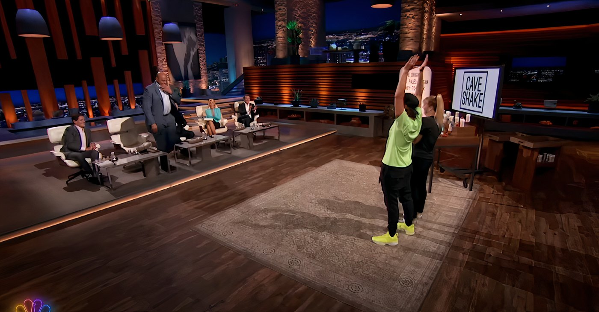
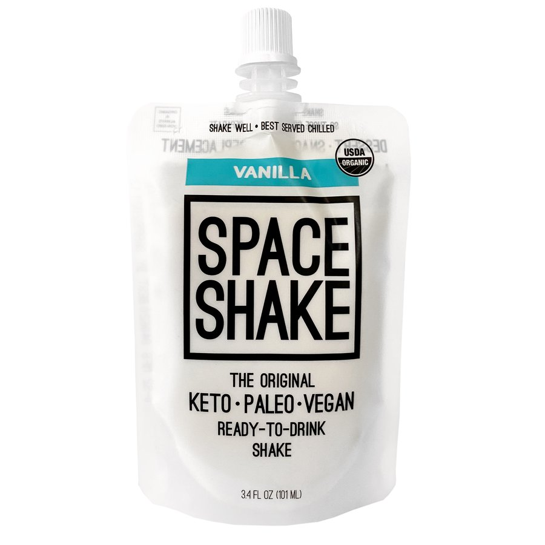
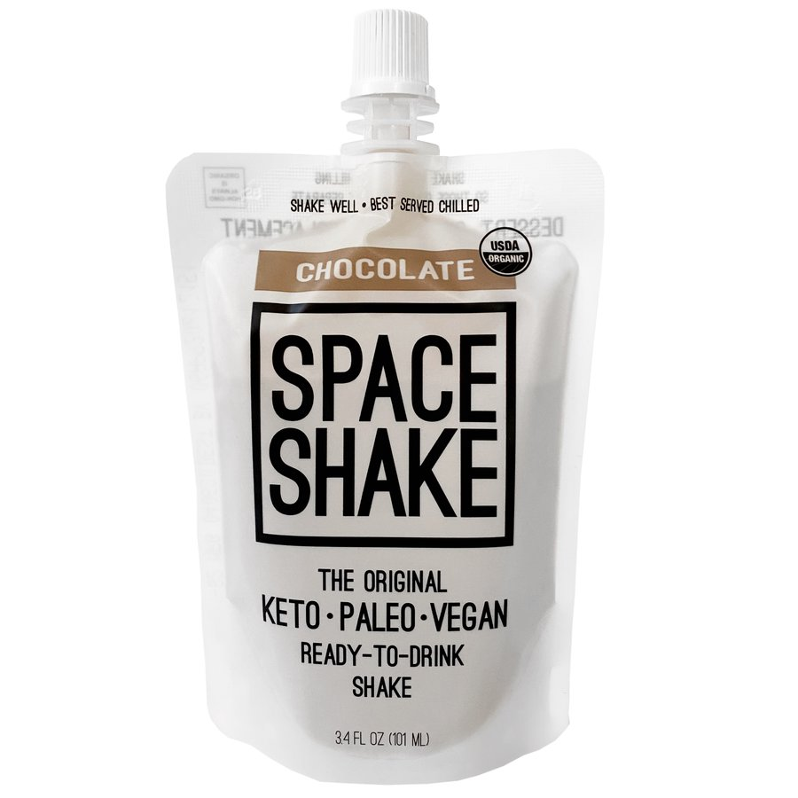
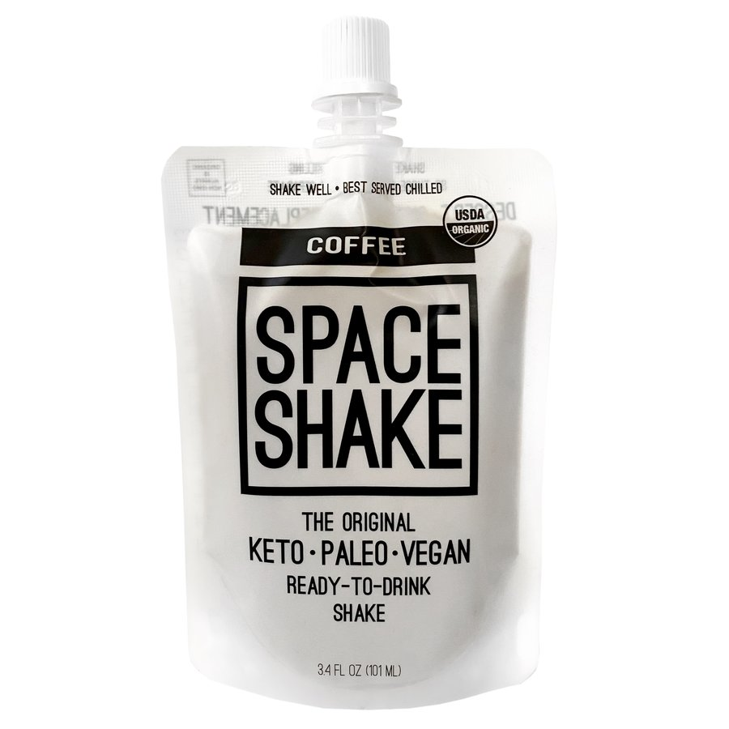
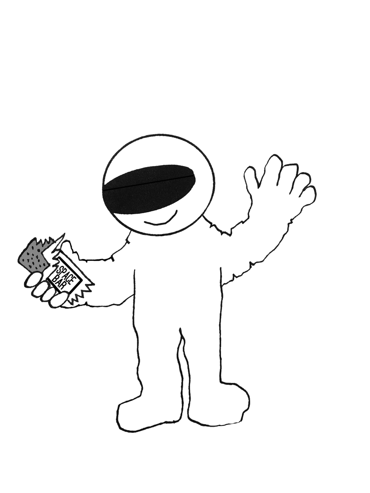
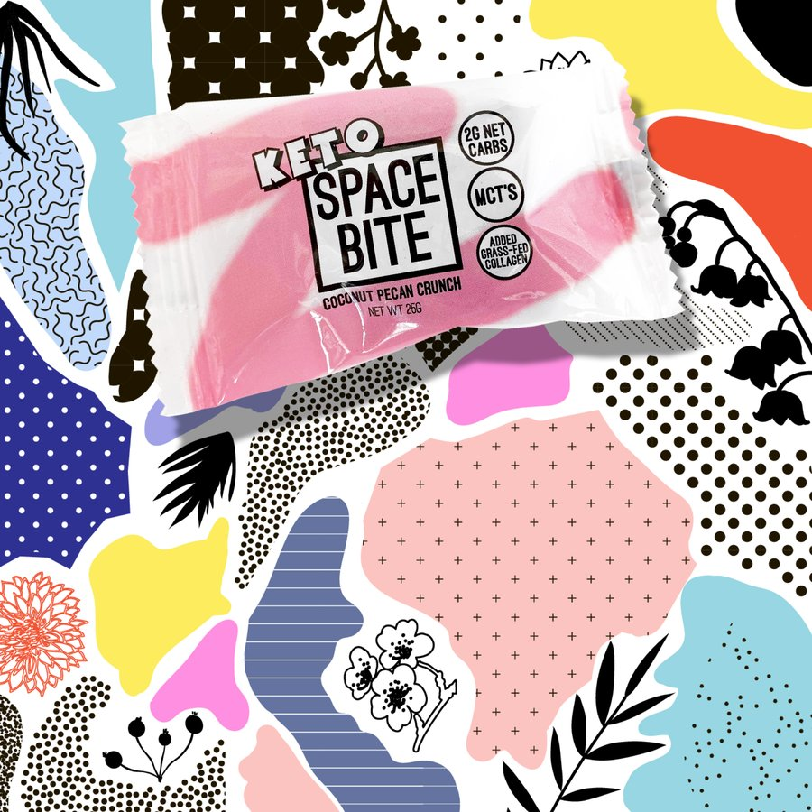

As seen on Shark Tank — Season 10, Episode 4, with guest Shark Charles Barkley
01 The sweet tooth problem
Billie Cavallaro and Holly Heath had been best friends for 22 years when they went keto: Cavallaro for chronic back pain, which he says eased dramatically (his experience, not a medical claim), and Heath after losing a parent to diabetes.
Nothing sweet on the shelf fit how they ate. So they made it themselves: a dessert shake from organic coconut milk. Keto, paleo, vegan, dairy-free, gluten-free. One of the first keto products on the market.

02 Sold out in LA
Cave Shake launched in Los Angeles and sold out almost immediately. Bootstrapped, with no paid advertising. Press coverage included Forbes. The company grew to roughly $5.2 million, Cavallaro says, and built an app to track ketosis.

03 Into the Tank
In 2018, Cave Shake appeared on Shark Tank, Season 10, Episode 4, and left with a $250,000 deal from guest Shark Charles Barkley.


04 To space
After the show, Cave Shake rebranded to Space Shake: the original glass jars became smaller plastic jars and then pouches, the same recipe going from a much larger jar to a snack size, and Keto Space Bites followed, collagen bites with 2g net carbs.





05 Fun facts
- Joe Rogan featured Cave Shake on an early episode of The Joe Rogan Experience, unsponsored — Cavallaro recalls Rogan pulling one out of his cooler to eat on air. The company marked the moment on Instagram in 2017.
- The shakes were reportedly featured in the fridge on HBO's Big Little Lies and on Netflix's Grace and Frankie, per the founders.
- Cave Shake was one of the first keto products on the market, before most people had heard of keto.
06 Where they are now
Billie Cavallaro is a product designer and entrepreneur. He leads design at Capital One, building AI-powered workflows and design systems at enterprise scale.
Holly Heath is an analytical leader with 15+ years in data-driven brand building and operations, and holds a Data Science Certificate, working in SQL, Python, Tableau and Google Analytics.
07 Quick answers
- What is Cave Shake?
- A keto, paleo, vegan, dairy-free and gluten-free dessert shake made with organic coconut milk, created by best friends Billie Cavallaro and Holly Heath. It later rebranded to Space Shake.
- Was Cave Shake on Shark Tank?
- Yes — Season 10, Episode 4, in 2018. The founders made a $250,000 deal with guest Shark Charles Barkley.
- What happened to Cave Shake after Shark Tank?
- It rebranded to Space Shake, and the packaging went from the original glass jars to smaller plastic jars and then pouches, with the recipe unchanged.
- Is Cave Shake the same company as Space Shake?
- Yes. Cave Shake is the original name. After the Shark Tank deal with Charles Barkley, the company rebranded to Space Shake.
- Who founded Cave Shake / Space Shake?
- Best friends of 22 years Billie Cavallaro and Holly Heath. Billie is now a product designer — see billiecavallaro.com.